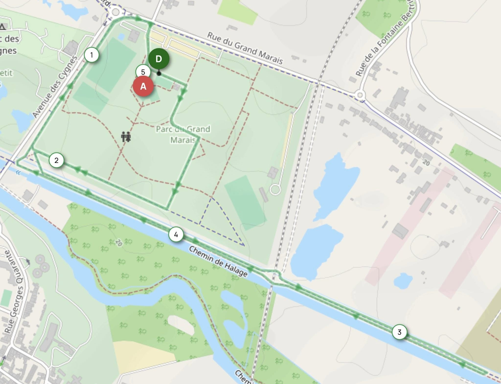
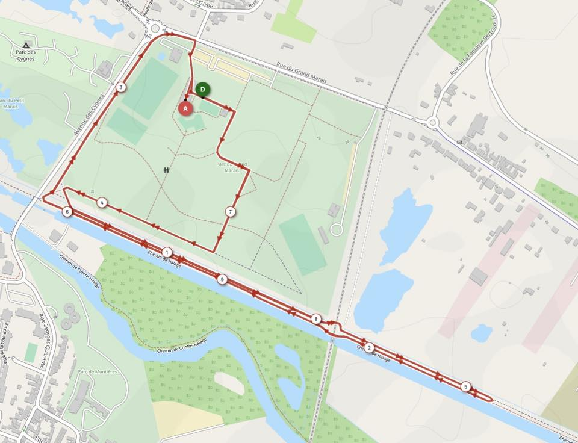

<div class="page-card">
    <header class="page-header">
        <div class="page-header-top">
            <h1 class="page-title">
                Courses des 4 saisons Amiens métropole <br>
            </h1>
            4 éditions par an depuis 1983
        </div>
    </header>

    <div class="page-body">
        <menu></menu>

        <div id="info">
            <h5>Le parcours du 5 km</h5>
            <ul>
                <li><b>Premier tour</b> : Une petite boucle de 1666 mètres</li>
                <li><b>Second tour</b> : Une grande boucle de 3333 mètres</li>
            </ul>
            
            <h5 style="padding-top: 20px">Le parcours du 10 km</h5>
            
        </div>
    </div>
</div>